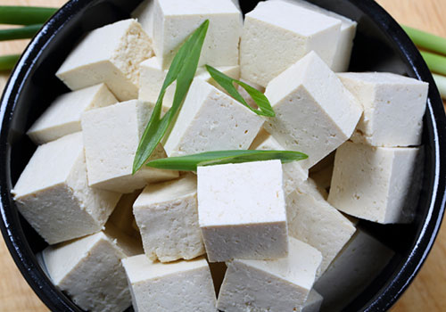
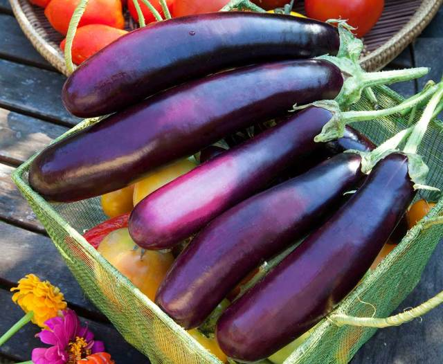
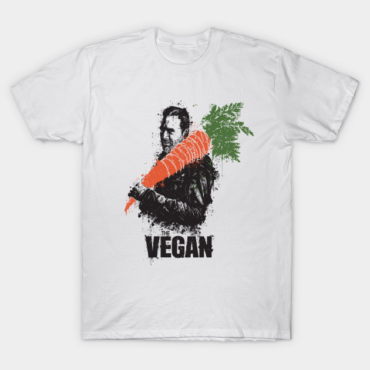

|
|
| Services |
| Our Products |
| Order |
| About Us |
Like a Veggie

Why are people drawn to vegetarianism? Some just want
to live longer, healthier lives. Others have made the
switch to preserve Earth’s natural resources or from
a love of animals and an ethical opposition to eating
them.
Thanks to an abundance of scientific research that demonstrates the health and environmental benefits of a plant-based diet, even the federal government recommends that we consume most of our calories from grain products, vegetables and fruits.
And no wonder: an estimated 70 percent of all diseases, including one-third of all cancers, are related to diet. A vegetarian diet reduces the risk of chronic degenerative diseases such as obesity, coronary artery disease, high blood pressure, diabetes and certain types of cancer including colon, breast, prostate, stomach, lung and oesophageal cancer.
life:
"The condition that distinguishes animals and plants
from inorganic matter, including the capacity for
growth, reproduction, functional activity, and
continual change preceding death."
Hana Dolley:
|
Ruffus Rummpas:
|
Cart:
Tofu: $9.99  |
Eggplant $4.99 |
Shirt $30.00  |
Price: $45.00 |
Shipping: +$4.99 |
Total Price: $50.00 |
| Order Now! |